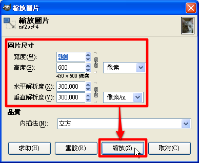
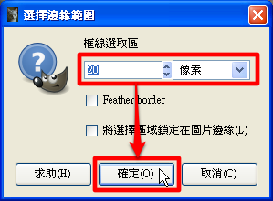
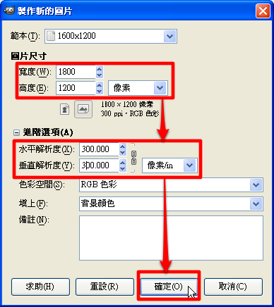
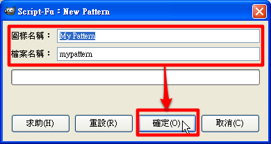

也紀念我們永遠的朋友 李士傑先生（Shih-Chieh Ilya Li）。
用 GIMP 輕鬆輸出大頭照
◎ 匯入大頭照
1. 要製作輸出中心可以方便輸出的照片，首先我們要做的事，就是將你已經拍攝好的照片處理成單張的 2 吋照片。請在開啟 GIMP 後，按一下【檔案】->【開啟…】。
2. 然後選擇你所要載入的大頭照後，按一下〔開啟〕按鈕。
3. 接著按下主選單上的【圖片】->【縮放圖片】，你可以看到「縮放圖片」視窗，在圖片尺寸區域將寬度調整成「450」像素、高度調整成「600」像素，並將解析度都調整成「300」像素/in，然後按一下〔縮放〕按鈕。

◎ 為大頭照加上白邊
1. 接下來我們要為大頭照加上白邊，讓裁剪更容易。請在鍵盤上按下〔Ctrl〕+〔A〕選擇整張照片後，按一下主選單上的【選擇】->【邊界…】。
2. 然後在「選擇邊緣範圍」視窗中，將「框線選取區」方格調成為「20」像素，或是任何你覺得適當的白邊寬度，接著按一下〔確定〕按鈕，就會選取所要的白邊範圍。

3. 按下按鈕後，在工具箱中選擇「填色工具」，並選取底下的「填上背景顏色」。然後在剛剛所選擇的範圍中使用填色工具，這樣就可以為照片加上大頭照中常見的白邊，讓你裁切照片時更為容易。
4. 加好白邊後，按一下【檔案】->【儲存】將作好的單張大頭照儲存起來，就完成大頭照的編修了。然後我們只要將剛剛做好的大頭照排成一個 1800*1200 的圖片檔，就可以拿去輸出中心輸出成 4*6 照片了。
◎ 將大頭照排列在 4*6 照片上
1. 首先我們要開啟一個 1800 * 1200 的空白檔案，請按一下【檔案】->【新增…】。
2. 然後在「製作新的圖片」視窗的「圖片尺寸」區域中，調整寬度為「1800」像素、高度為「1200」像素，並在「進階選項」區域中，將解析度都調整成「300」像素/in，然後按一下〔確定〕按鈕。

3. 按下按鈕後，你就可以看到一個新的空白檔案，讓我們可以開始將大頭照排列上去。由於手動排版實在太麻煩了，因此我們將使用 Pattern 來做自動排版。請回到剛剛編輯單張大頭照的圖層，按一下鍵盤上的〔Ctrl〕+〔A〕選擇整張照片，然後按一下主選單上的【編輯】->【貼上為…】->【New Pattern…】。
4. 接下來在「Script-Fu：New Pattern」視窗中輸入「圖樣名稱」和「檔案名稱」中輸入這個 Pattern 的名稱，然後按一下〔確定〕按鈕。

5. 將單張大頭照做成 Pattern 後，回到剛剛新開的空白圖檔，按一下鍵盤上的〔Ctrl〕+〔A〕選取整張空白圖檔。然後在右方「圖樣」工具箱中，選擇剛才製作的 Pattern，並按一下主選單上的【編輯】->【填上圖樣】。
6. 按下【填上圖樣】後，你就可以看到八張大頭照整齊地排列在空白圖檔上了，接下來只要將這張圖檔儲存成 JPG 檔後，拿到輸出中心輸出 4*6 照片，你就有八張大頭照可以用了。
您也許有興趣閱讀以下文章:
- 用 GIMP 輕鬆做出 LOMO 效果！ - 2012-02-10
專欄總覽


E-Mail：contact@openfoundry.org Address：台北市南港區研究院路2段128號 中央研究院資訊科學研究所 . 隱私權條款. 使用條款